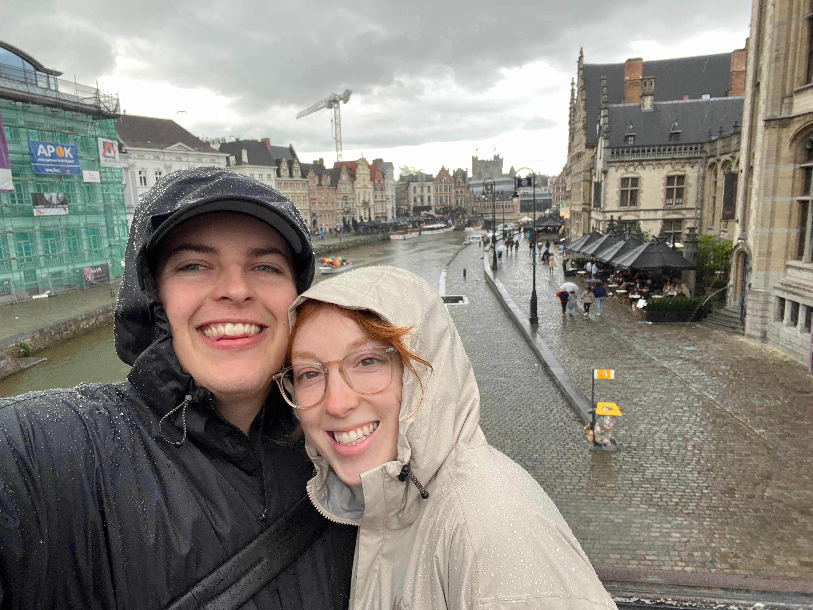

Links
Assignments
About Me
Hello! My name is Amber, and I’m currently a PhD student in Civil Engineering. I'm originally from New Hampshire and love the east coast! I've been married to my husband for over 3 years. This summer we adopted a kitten and named him Rocky after the character in Project Hail Mary (iykyk). I enjoy being outdoors, birding/bird photography, and traveling. I’m passionate about air quality research and sustainability!
Interests